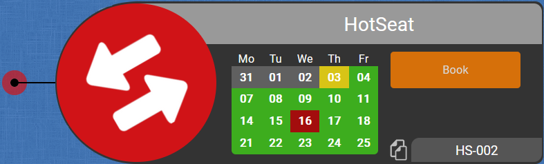

 |
|
Display meeting room names
Want to highlight all meeting rooms with their names? Just enter "meet" in the searchbox :)Link to search results
You would like to pass a link to someone with a search?Use the following syntax:
https://[hostname]/index.php?map=MAPNAME&findme=SEARCHTEXT
Example: https://[hostname]/index.php?map=goeppingen&findme=vogt
Multitarget search link
You would like to pass a link with multiple search terms?Use the following syntax:
https://[hostname]/index.php?map=MAPNAME&findme=SEARCH1|SEARCH2
Example: https://[hostname]/index.php?map=goeppingen&findme=vogt|hoerz
Teamlinks
Share whole teams easily!Use the following syntax:
https://[hostname]/index.php?findteam=TEAMNAME
Example: https://[hostname]/index.php?findteam=Chimera
Changes API
Get all newcomers and title changes as a beautiful JSONrest/changes
Optional parameters:
maxresults: limits the output to the last n changes
Desks API
Get all desks with additional information assigned to themrest/desks
Optional parameters:
map: lists only desks of the specified map
search: list only people and desksnumbers that match the search string
Teams API
Get all teams in Companymapsrest/teams
Users API
Get a list of all syncronized LDAP usersrest/users
Optional parameters:
search: list only people and desksnumbers that match the search string
title: list only people which titles match the search string
Version 92026
Opening the admin panel now lands on a fresh dashboard that gives you an at-a-glance overview of your installation: the running version and build date, live system health (memory and disk usage) and a status card for every configured integration. Connectivity to LDAP, Microsoft Entra ID, Robin and SAML is checked automatically in the background so you can spot a broken connection before your users do.
All of your user directories are now managed in a single, reorderable priority list – every LDAP and Microsoft Entra ID connection plus Robin, side by side. Drag sources into the order you want and, per source, choose whether it assigns people to desks and whether duplicates are kept. When the same person appears in several directories, the higher-priority source wins, so there's no more juggling of separate, hard-coded rules. Changes take effect instantly at render time, without a resync, and a new seat list lets you preview exactly who ends up where.
The extra Robin-only desk colour is gone. Every occupied directory desk now shares one harmonized look and carries a small badge showing which directory it came from – LDAP, EntraID or Robin – so you can tell at a glance where an occupancy originates, whatever the source.
You can now switch the identifier that ties users to their data from the Windows account name (samAccountName) to their e-mail address – and back – straight from the integration migration assistant. The migration runs as a safe, two-phase “create the new, then remove the old” process that converts avatars, admin records, audit log, bookings and desk references in one go, only flipping the setting once everything is converted, so an interrupted run never leaves things half-migrated.
- New installations now use the e-mail address as the default identifier; existing installs keep their current setting untouched.
- Microsoft Entra ID connections can now assign people to desks just like LDAP, following the same priority list.
- Reworked the built-in demo data so it plugs into the new priority engine and works in both identifier modes.
- Fixed several directory-migration issues and a case where moving a desk could turn it into a manually placed one.
- Various fixes and polish across the users admin panel.
Editing the map has been rebuilt from the ground up. Adding and editing items now happens in a dedicated edit sidebar instead of a pop-up over the map: pick an item from the palette to drop a live draft, position it exactly where you want and confirm to save. Coordinates are two-way – drag an item and its X/Y update, or type X/Y to nudge it into place. A new lasso lets you select several desks at once and auto-align whole pods into neat rows, and the map now opens in edit mode right after you sign in.
Phones now get a purpose-built, touch-first experience at /m/ with smooth pinch-to-zoom and panning, cross-location search, live meeting-room status and read-only admin views. It can be added to the home screen and launched like a native app.
CompanyMaps can now sign users in and sync the directory through Microsoft Entra ID, complete with a simple on/off switch in the admin panel.
Uploading a profile picture now opens an interactive cropper: pick a square area, rotate in 90° steps and apply. It accepts JPG, PNG, GIF and WebP as well as iPhone HEIC/HEIF photos, converting them for you right in the browser.
- Robin sync is more robust: a new Robin-only mode clears duplicate Active Directory desks, a Robin–AD consistency check flags mismatches, and several sync bugs were fixed.
- The admin sync panel got a consistent look across all its sub-tabs, a separate cache per source and clearer, consolidated check output.
- Reworked the admin dashboard.
- Configuration exports now include
config.jsonwith the password safely redacted. - Fixed the header menus while in edit mode and cleaned up shared-desk warnings.
- Numerous iOS and Android fixes for the mobile view.
- Updated the bundled jQuery to 4.0.0 and Chart.js to 4.5.1, and removed the legacy Underscore.js dependency.
CompanyMaps is now a single self-contained binary. Deployment is as simple as dropping in one file – no PHP, no MySQL and no external sign-on service to set up. There are no more cron jobs to schedule, it runs on every platform (Linux, macOS and Windows) and it is noticeably faster for everyone.
Desk bookings now sync straight from Robin: seats people have reserved in Robin show up occupied on the map automatically, with the right person resolved and assigned to each desk – no manual booking needed. This builds on our existing meeting-room integration, which continues to show each room's live availability along with the title and time of the current and next meeting. Everything is configured and kept in sync from the admin panel.
Search across the map you're on and every other location at once, neatly split into “on this map” and “other locations”. Matching desks light up while the rest fade back, and you can combine terms with a pipe, e.g. john|desk5.
Offices are now placed on a real world map by their address using geolocation (powered by an optional Geoapify integration). Pins for locations that sit close together automatically arrange themselves so they never overlap. Adding an office is as easy as typing its address: a panel slides in from the + button and auto-fills the name, coordinates, country flag and timezone for you, with an “Advanced” toggle for manual overrides and an optional floor-plan upload.
The admin panel has been rebuilt from the ground up: tabs and forms update in place without full-page reloads, the maps, teams and audit-log views got a cleaner look, and there's a new “Geocoding” section to set up the Geoapify key, test it and batch-fill location coordinates.
- Sharper everything: the map, desk labels, clock and menus now render crisply at every zoom level instead of looking blurry when scaled.
- The changes feed keeps its familiar sidebar and adds a full-screen, searchable view that loads as you scroll; the dead “Join Teams channel” entry has been removed.
- Refreshed personal menu with a smooth, iPhone-style “Dynamic Island” animation that adapts to the length of your name.
- Cleaner, consistent login and logout buttons and a refreshed look for this help page.
- Active Directory (AD) authentication has been removed in favour of the built-in sign-on.
Version 82022–2023
- Fixed unsanitized input parameters for GET/POST requests
- Small bugfix for the overview map in the map list of the admin panel
- CompanyMaps is Open Source now! Licensed under the MIT license.
- Many many cleanups to files and especially the folder structure
- all remaining hard-coded variables have been moved to the database
Version 72022
- Date has been added to the existing clock at the bottom
- Travel into the future by clicking on the clock and selecting a date. The map and all bookings will be updated accordingly.
- Added a hover effect to both the personal menu and the clock to make them more intuitive to use
- Fixed a serious bug for the calendar view on bookable desks. Now it should reflect reality again.
- By hovering over a booked date in the calendar, the persons name should appear now instead of “someone else”
- Desk bookings: easily book your desks and get a unified view and search across all offices. Support for both regular bookable desks and hot desks.
- New status colors: the number of status colors has been reduced and some colors have changed (e.g. empty desks now appear in grey color). See the legend for more information.
- SAML login via Azure Apps so you don't have to waste your precious time on typing in your password again and again.
- Much faster loading times (20x) as core functionalities such as the landing page and the desks API have been fully refactored
- Sunset of printer API: this was broken for a while and should not be required anymore
- Cleanup of obsolete code to reduce size and improve readability
- Search results for teams animation have been significantly reduced in size to be less annoying
Version 62022
- User Logins! Finally, all users are now able to login. You won't have admin permissions, but you're able to replace your profile picture
- Easier login: instead of using your AD username, you can use your full mail address as well
- Image Upload: just login and click on your profile picture in the lower left corner to replace or delete it
- Data Deletion: User pictures are only retained as long as the user exists in the Active Directory and will be automatically deleted afterwards
Version 52020–2022
- Notifications have updated to use MS Teams instead of Slack
- Links to channels have been updated
- The animation on team results has been fixed and is now correctly centered again
- fixed some PHP warnings
- updated chart.js to latest version
- Fully revamped admin panel: cleaner look and better assistance for fixing problems
- Properly declared variables to remove unnecessary PHP warnings
- Removed obsolete code
- User authentication now supports LDAPS, too
- LDAP connections now support encryption (=LDAPS)
- Some desk numbers exceeded the space on the nameplates, so the space has been increased by 50% now.
- New Statistics API: For all those (anonymous) funky usage charts. Now with less data collection and much more speed!
- New LDAP API: sync has been rewritten from scratch, offering more functionality and a consistent user experience for our admins.
- Some companies grow bigger than expected. To provide more scalability, the LDAP sync is now able to fetch data of up to 26.000 people.
- Slack notifications now are bundled into a single message per sync, so you don't get spammed any more.
- If you are curious how many people already used Cmaps today, you can enable a counter in the options.
- Some visuals were refined to provide a nicer overall look.
- Fixed some inconsistencies dating back from the changes between v3 and v4.
- Made some adjustments to support PHP 7.4
Version 42019
- Introducing mobile mode (preview): a new UI for smaller devices like smartphones and tablets to assist you on the go.
- Overlapping labels do not really help. That's why peoples names are now hidden when displaying teams.
- As more and more locations were added, the map selection sometimes grew out of the screen. It will now split into two columns if it gets too long.
- In some cases the URL with all its parameters blocked the workflow. In will now be reset to the base URL to keep everything running smoothly.
- Added customization options for logo and apptitle via database (relevant for admins only)
- Fixed a bug where names and numbers of shared desks were displayed out of place
- Part-time employees and students are important to us - so every desk now supports up to 4 people to make them visible!
- The database has been redesigned and all items are now properly identified by an extra attribute instead of using some strange algorithm.
- Search engine has been rewritten in pure JavaScript to fully rely on the APIs introduced in Version 3.x - hyper speed, less network load!
- Because R&D loves funny team names: Searching for people now also highlights the teams they are part of.
- Update triggers have been fine-tuned to run less often and save your battery for more important tasks.
- Leading and trailing whitespaces will be automatically removed from your search now, because nobody should care of invisible typos.
- The admin dashboard now uses JavaScript to refresh. Finally no more page reloading.
- Many useless bugs have been kicked out of the house to make your stay more enjoyable.
Version 32019
- Changes to database scheme to simplify desktypes for v4
- Code cleanup for easier readability
- All update timers (notications, desks, meetings...) reduced to optimize power usage
- Fixed: Manager border colors don't mess with the color of the desk (blue) anymore
- Fixed: Hover on mapflag is now always on top
- Copy-to-clipboard now uses a fadeout dialog box - saves you one click that can be used somewhere more meaningful ;-)
- Copy-to-clipboard is now possible for whole maps from the overview, too
- Dismiss location info now by clicking anywhere on the overview map
- Fixed: Adding new maps with upper case letters could cause problems on database
- Fixed: Zoom effect on overview map could cause blurry items on Safari
- Fixed: On Safari, fonts for smaller items on the overview appeared too large
- Overview has been completely redesigned with new map, detail view on locations and scalable icons
- New feature: Get direct links to people! Click on a desk to stick it and use the copy icon :-)
- Timezone is now fetched from mapconfig in database
- Some minor bugfixes
- Fixed: Broken links in notifications
- Printer status has been added
- See availability and cadridge status (if available)
- Stick it to get a link to the configuration page
- Drag and drop for edit mode (admins only)
- Click on a desk to edit its properties as before
- Move a desk to a new position directly
- Added a map creator for the frontend (admins only)
- Works like adding a desk on normal maps
- Preview of map included
- Deletion only available on the backend, no change here
- Some minor improvements and bugfixes
- Overview is now using JS as well
- Fixed cutoff nameplates when too near to top border
- Code has been cleaned up
- Most of the code has been completely rewritten in JavaScript using REST APIs
- Redesign of most legacy stuff, like the nameplates
- Meeting room integration: Status of all Robin-connected rooms is now visible on the map
- Mobile phone numbers have been added to make it easier to contact people on HomeOffice
- A clock with the local time of the map has been added at the bottom of the screen
- Much easier editing of desks (#1 pain point for the admins)
- New Desks API in /rest/desks - use the map parameter to filter results. Documentation updated with API section.
Version 22016–2019
- New Users API in /rest/users - use the search and/or title parameters to filter results
- New Option: Show names. Displays all names directly on the map.
- New ChangeNotifier: see who is new on Maps and who got promoted or changed department.
- Added filter options to the auditlog (AdminPanel).
- Teams can now be linked with their teamnames.
- Teams have been included in search results.
- Addressbook has been removed.
- Role-based permission controls implemented in frontend and admin panel
- Teams sidebar frontend and admin panel implemented
- New map selection menu, looks much cleaner now
- Bugfix to desknumber display option to support names with multiple dashes
- Consistency check results are ordered now
- Bugfixes to global search and AJAX requests
- New infobox implemented - replaces Quickactions
- Global search suggestions added to regular maps (by popular demand)
- Fixed a display bug for the consistency check.
- Login and AddItem Dialog are now done via AJAX.
- Stats in Admin Panel are now shown as soon as they are fetched.
- Slack Icons removed - did not work as expected.
- Config and ShareLibs have been separated for easier updates.
- Maps can now also be disabled in addition to be deleted. Admin Panel has been updated to reflect those changes.
- HotSeats added
- Experimental Slack support added. Click on a desk to open chat window.
- Addressbook is now an optional setting to save bandwidth.
- VIP desks have been moved to a db-based configuration. Admin Panel updated to reflect those changes.
- Some tweaks to the print mode. No more printmap required, inverting the map is now done at runtime via CSS.
- Full featured admin dashboard has been implemented!
- LDAP connector updated to dynamically use configuration in database
- New mapflags in SVG format have been included
- Bugfixes to global search algorithm
- All configuration settings have been moved to database
- Minor fixes to scaling algorithm
- Manual Scaling reimplemented for more convenience
- Perfect AutoScaling implemented! No more manual zooming anymore. Try it out by resizing your browser window :)
- Lots of graphical changes to the admin panel to give it a fresher look.
- Small fixes to the group display.
- Printers now have status links
- QuickActions for all occupied desks - click on people to mail or call them
- Added a print mode in the options menu (beta!)
- Addressbook supports direct dialing via CTI client now
- Security improvements by switching to session based user authentication
- Improved overall search experience - should be faster and more reliable now.
- Addressbook added! See a list of all employees, search, mail or call them or do an easy multisearch.
- Optimized touch screen navigation. iPad should have a much better experience now!
- Your shiny new keycard does not work on a particular door? No problem! All keycard locks in GP are now on the map with their names - and IT will handle the rest for you :)
- Added an overlay for the logo
- Slight adjustment on info boxes: Mail and phone icons added
- First Aid: all kits and rooms of GP/VAI now visible in the map. Try a click on them ;)
- Some code cleanup. Everything should look the same as before :)
- New item: Service. Displays information of useful services in your building.
- New item: Exits. Shows where to get out if you need a break from your hard work ;)
- Modified color of Food item - that sort of yellow looked really strange.
- Added new option. The mailto links may now be disabled, so you will get the info box on touch devices, too.
- Addressbox on overview map locations added
- Multitarget search implemented: Demo
- Fixed some character encoding problems by switching to UTF-8
- New map: London added. All location maps available now.
- Javascript for settings Menu: opens instantly now
- TODA SSL support: Images are loaded via https now, so no mixed content anymore
- Instant search: 750% speed increase for all your searches using AJAX! 25% faster than ServiceCamp ;-)
- Redesign of search results: dark background and centering for better readability
- New map: Yerevan added
- New maps: Adelaide, Munich and Stuttgart-Vaihingen added
- Multiseating: One person may occupy more than one desk now
- Itemscaling: Items are able to have a map-specific scale now
- Blocked desks: Desks may have the status “blocked” now. These desks are neither free nor in use
- New setting: all team leaders may be highlighted now using the WoW quality colors
CompanyMaps is licensed using the MIT license and uses the following tools in addition:
| Name | Author and license | |
|---|---|---|
| Chart.js | Chart.js Contributors, MIT license https://www.chartjs.org | |
| Cropper.js | Chen Fengyuan, MIT license https://fengyuanchen.github.io/cropperjs | |
| heic2any | Alex Corvi, MIT license https://github.com/alexcorvi/heic2any | |
| jQuery | JS Foundation, MIT license https://jquery.com | |
| Roboto Font | Google, Apache license 2.0 https://github.com/googlefonts/roboto |